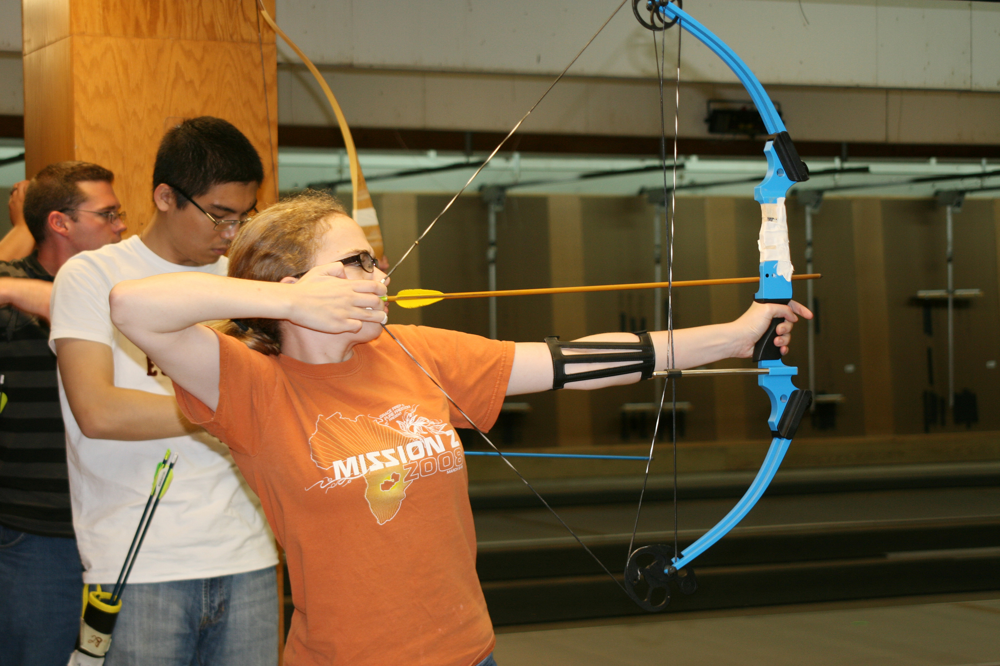
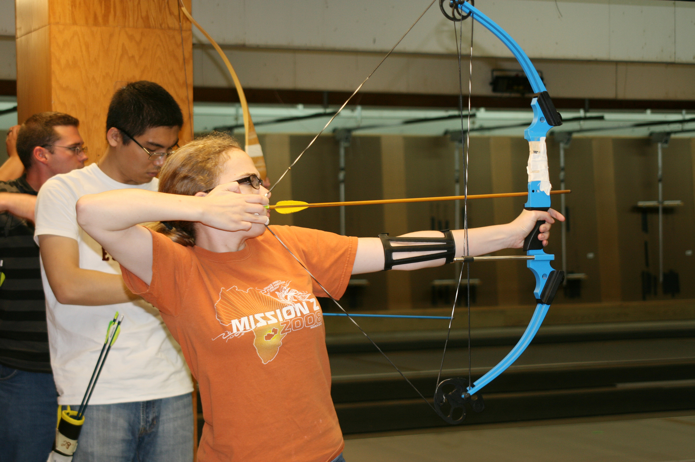

Name: A101 Basic Archery
Description: A101 is a basic archery course that focuses on beginning archery safety, skills, and drills. Participants learn about archery form, range rules and etiquette. Form training and fun games are introduced in this class. Equipment will be provided with exception of safety kit.
Cost: $120/month
Schedule: Mondays and Wednesdays, 4-5pm
Prerequisite: Interest in learning about the sport of archery. Minimum age 8 years old or 7 w/ pre-evaluation.
Name: A102 Intermediate Archery
Description: A102 is an intermediate archery course that focuses on intermediate archery safety, form, and introduces new equipment styles of shooting Recurve and Compound bows. Fun games and form reinforcement techniques are emphasized in this class.
Equipment will be provided with exception of safety kit.
Cost: $120/month
Schedule: Tuesdays and Thursdays, 4-5pm
Prerequisite:A101 or recommendation from private lesson instructor. Minimum age 7 years old.
Name: A103 Advanced Archery
Description: After taking the A101, A102 classes, students are eligible to participate in the A103 class. This class focuses on a continued education towards tournament styles of shooting used by many archery tournament associations from around the world. Along with the tournament lesson, participants receive continued knowledge around their shooting form and advice on personal equipment selections. Equipment will be provided with exception of safety kit.
Cost: $120/month
Schedule: Tuesdays and Thursdays, 5-6pm
Prerequisite: A101/A102 or equivalent. Minimum age 7 years old.
Type: Single Lesson
Description: 1 hour of expert guidance by a USA Archery-certified coach
Price: $50
Type: 3 Lesson Package
Description: 3 lessons, 1 hour each of expert guidance by a USA Archery-certified coach
Price: $140
Type: 10 Lesson Package
Description: 10 lessons, 1 hour each of expert guidance by a USA Archery-certified coach
Price: $380